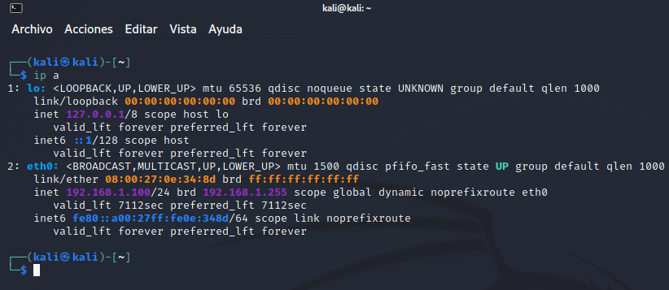

4.1 Instalación DMZ - Pfsense
1. Introducción
En este capítulo se verá cómo crear un tipo de DMZ en la cual se pueden alojar servicios Web que no se quieren que sean accesibles desde la red interna de la organización.
Ejemplo: Esto se utiliza cuando se alojan webs de clientes y se quieren tenerlas aisladas o cuando se tiene algún servicio vulnerable que se necesitas aislar. De esta se tendrán unos servicios que no se podrían acceder desde la red IT.
En el ejemplo que se muestra, también se realiza una configuración para permitir a una sola IP acceder a un equipo de esa red DMZ mediante el protocolo ssh para administrarlo. También se podría mejorar este aislamiento si en la red DMZ se niega la salida del tráfico por cualquier red que no sea la WAN.
2. Recursos necesarios
- ISO Pfsense 2.6.0 --> pfSense-CE-2.6.0-RELEASE-amd64.iso
- VirtualBox para configurar una máquina virtual con:
- 3 adaptadores de red:
- Modo puente: Interfaz WAN.
- Red interna: dmz.
- Red interna: Red it.
- 3 adaptadores de red:
- Máquina virtual Servidor Web apache2 en la red interna dmz y configurado el tcp/ip como automático.
El esquema de red que se va a implementar en este capítulo y posteriormente en el capítulo 4.2 es el siguiente.

Figura 1. Esquema de red a implementar.
3. Instalación del router firewall Pfsense
En este apartado, se describe el proceso de instalación de un router firewall pfsense open source.
Paso 1
En primer lugar, hay que acceder a la url https://www.pfsense.org/download/, para descargar la iso con la última versión disponible. Par este caso, la 2.6 (a fecha 04/05/2023) para AMD 64 bits.
Paso 2
Una vez se tiene la iso, hay que crear una nueva máquina virtual para instalar pfsense con la siguiente configuración:
- RAM 2048 MBytes y 1 núcleo.
- Disco de 30 Gbytes.
- Adaptador de red 1: Modo puente Puente.
- Adaptador de red 2: Red Interna, a la que se le nombra como dmz.
- Adaptador de red 3: Red Interna, a la que se le nombra como it (departamento de informática).
{kind=link}
{kind=link}
Paso 3
Pulsar OK con la Install seleccionado.
Paso 4
Hay que seleccionar el mapa del teclado, para este caso, el Spanish (accent keys).
Paso 5
A continuación, hay que seleccionar el tipo de particionado, para este caso se elige El guiado para BIOS y se pulsa OK.
Paso 6
Comienza el proceso de instalación donde irá copiando todo lo que tiene en RAM al disco duro. Una vez finalice, aparece una ventana preguntando si se desea realizar alguna interacción manual (figura centra). Para continuar, se pulsa que No y aparece una nueva ventana donde se pregunta si se quiere reiniciar o acceder a la shell. Para continuar, hay que pulsar en 'Reboot' y a continuación, hay que quitar la iso del DVD para que no vuelva a iniciar el proceso de instalación.
Paso 7
Una vez se reinicia el sistema, comenzará con la carga del sistema operativo y con la configuración automática de la WAN y LAN. La red WAN corresponde al adaptador puente por lo que la ip es dinámica y es asignada por el router (bridge). Por otro lado, la LAN corresponde con el adaptador red interna dmz con una ip dentro del rango de red 192.168.1.0.
Hay que tener en cuenta, que es necesario saber las MAC's de los adaptadores de red, y para ello, hay que acceder a la configuración de la máquina virtual y anotar las MAC de cada uno de los adaptadores de red. También, hay que anotar el orden de creación de los adaptadores, es decir: El adaptador 1 tiene la mac 08002774A2B0, la red interna dmz la mac 0800278A840 y por último, la red interna con mac 080027D14FB3.
Pqso 7
A continuación, hay que seleccionar la opción 1 del menú 'Assign Interfaces', para acceder a la sección de asignación de interfaces, donde se podrá cambiar cada una de las 3 interfaces que se han establecido. Como se puede observar en la figura inferior, al seleccionar la opción 1, se listan las 3 interfaces de red con su mac, y es ahora donde se puede hacer la correspondencia de cada una de ellas con el adaptador que se ha configurado en la máquina virtual a partir de la dirección mac, es decir, la interfaz em0 corresponde con el adaptador puente, la em1 con el adaptador red interna dmz y la em2 con el adaptador red interna it. Se puede observar también, que corresponden con el orden de creación de los adaptadores de red, es decir, em0 adaptador 1, em1 adaptador 2 y em2 adaptador 3.
Lo que se realiza a continuación, es configurar la em1 como DMZ, pero antes, el sistema pregunta si se quiere habilitar el uso de VLAN's, para este caso se contesta con 'n' ya que no es el caso.
Paso 8
Una vez pulsado 'n', hay que indicar cuál es la interfaz WAN, para este caso, corresponde con la em0 que es el adaptador puente. Una vez se introduce la interfaz WAN, el sistema pregunta cuál será la interfaz LAN. Esta interfaz es importante ya que es la que permitirá el acceso a este firewall mediante web. Para este caso, se selecciona la em1 aunque ésta corresponde a la DMZ. Posteriormente se realizará la conversión de esta interfaz LAN en la DMZ de la red.
Por último, el sistema pregunta si la em2 se quiere utilizar como una interfaz opcional, para este caso, se introduce em2 para que la utilice como opcional. Para consolidar los cambios (reiniciar el servicio), hay que introducir 'y' a la pregunta 'Do you want to proceed [y|n] ?'.
Paso 9
Una vez reiniciado el servicio, aparece de nuevo el menú y en la parte superior, las interfaces que se han configurado con las ip's que se han asignado por pfsense, donde la em0 se ha asignado por dhcp.
Paso 10
A continuación, se configura en una máquina virtual con kali linux, ubuntu, etcétera, el adaptador de red conectado a la red interna dmz, de este modo, se podrá acceder mediante el navegador a la configuración del pfsense. Una vez configurado el adaptador, hay que iniciar la máquina virtual y como se puede observar en la figura de la derecha, el equipo ha obtenido una ip de la red interna de la dmz.
|  |
Paso 11
A continuación, desde el equipo kali se accede a la url http://192.168.1.1, que es la ip de la interfaz dmz (LAN) del pfsense. Aparece un warning dado que no se tiene un certificado. Para continuar, hay que pulsar sobre 'Accept the Risk'. A continuación, aparece la pantalla de login donde las credenciales por defecto son admin - pfsense.
 |
Paso 12
Al pulsar en 'Sign In', si se observa la consola del pfsense, aparece un mensaje notificando el login del usuario admin (figura izquierda). Una vez de vuelta al entorno web, aparece una nueva página donde aparece un Warning recordando que se está utilizando el usuario por defecto y que se debería cambiar su contraseña (figura derecha), además, en la zona central, aparece un asistente para realizar la configuración inicial de pfSense.
Una vez que se ha accedido por primera vez al pfsense por el entorno web, lo primero que hay que realizar es la configuración inicial del mismo. Para ello, hay que pulsar el botón 'Next' de la figura derecha del Paso 12 o acceder al menú System --> Setup Wizard. Se describe el proceso a continuación.
Paso 1
El primer paso del asistente informa del servicio Netgate por si se desea contratar, hay que pulsar 'Next', para continuar.
Paso 2
A continuación, hay que establecer los datos generales, es decir: El nombre del Hostname que para este caso será utm-1, el dominio que para este caso será ciber y el servidor de dns primario y secundario, que para este caso serán: 1.1.1.1 y 8.8.8.8. Para continuar hay que pulsar 'Next'.
Paso 3
En este paso aparece la sección para configurar el servidor de hora que para este caso, será GMT+2 ya que actualmente (mes de mayo) España se encuentra en el horario de verano. Para continuar hay que pulsar 'Next'.
Paso 4
En este paso hay que configurar la interfaz WAN. Dado que en nuestro escenario, esta interfaz se tiene por dhcp, se deja tal y como aparece. Dependiendo del escenario, esta ip puede ser estática, PPTP o PPPoE, todo esto dependerá del proveedor contratado para el acceso a internet. Si se observa la figura de la derecha, son reglas que hay que tener en cuenta, es decir, si este router está apuntando directamente a internet, se deben seleccionar las 2 reglas (se bloquean las ip's privadas y loopback para que no salgan hacia la WAN). Para este caso se desactivan las reglas, ya que la interfaz WAN se encuentra en un espacio de direcciones privado. Para continuar hay que pulsar 'Next'.
Paso 5
En este paso se configura la ip y máscara para la dmz (LAN). Para este caso, se deja la propuesta ya que es la que se configuró anteriormente. Como norma general y buenas prácticas, esta dirección debe ser una ip baja o alta dependiendo cómo se quieran configurar las ip's para routers y servidores, es decir, se podría poner 192.168.1.1 (baja) o 192.168.1.254 (alta). Para continuar hay que pulsar 'Next'.
Paso 6
En este paso, hay que establecer una contraseña para el usuario admin, es decir, cambiar la contraseña por defecto. Para continuar hay que pulsar 'Next'.
Paso 7
A continuación, el asistente pregunta si se desea hacer una carga de la configuración que se acaba de establecer. Para consolidar los cambios, hay que pulsar 'Reload'.
Paso 8
Una vez finaliza la carga, aparece una nueva página informando del éxito de la misma. Para finalizar el asistente, hay que pulsar 'Finish'.
Paso 9
En este punto, ya se tiene el pfsense con la configuración básica. En la nueva página que aparece, se pueden ver todas las configuraciones, el estado del equipo, etcétera.
{kind=link}
Obra publicada con Licencia Creative Commons Reconocimiento No comercial Compartir igual 4.0